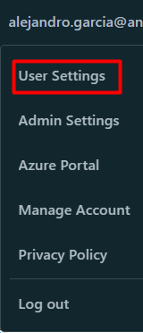

Azure Databricks - Limpia los logs de los clusters y ahorra dinero
En este artículo vamos a hablar de cómo podemos limpiar los logs de los clusters de Databricks.
Pero antes de entrar en detalles, vamos a contar la historia que hay detrás de este artículo:
Hace algún tiempo revisando los costes que teníamos en Azure Databricks, nos encontramos qué el coste de los Storage Accounts que usamos en Databricks era bastante alto.
Siempre achacábamos este alto coste al precio de las operaciones en los storage accounts. Nuestro mantra siempre era “Es elevado el coste por el gran número de operaciones que hacemos” Si trabajáis con Databricks, aunque sea con un volumen de datos pequeño, se realizan muchas operaciones en los storage accounts. Y ya sabéis, a más operaciones pues más altos son los costes. Además suele ser más que probable que el coste de operaciones sea mayor que el precio del almacenamiento de los datos.
Pero amiga/o ¿Qué pasó un día que entramos en detalle en el coste de Databricks?. Pues vimos que el coste de los storages manejados (conocido como DBFS Root) de nuestros workspaces de Databricks tenían un coste al mes muy elevado.
Este storage es usado por el workspace de Databricks para mantener datos temporales, librerías instaladas en los clusteres, los ficheros python a ejecutar, los LOGS DE LOS CLUSTERS CREADOS…. . Y es en los logs donde estaba el problema.
En nuestro caso, trabajamos usando Run Jobs. Esto significa que cada vez que lanzamos un job, se crea un cluster. Pues imaginaros lanzar más de 200 Run Jobs al día, la de logs que se pueden generar.
Es por esto por lo que os comparto el siguiente script de Powershell para que no os pase lo mismo:
De este script de Powershell, comentaros que necesitareís un Access Token de Databricks.
Podeís generar el token a través del workspace de la siguiente manera:
-
Dentro del workspace, vamos a User Settings
 -
En el apartado User, pulsamos en Developer.
-
En el apartado de Access tokens, pulsamos en Manage.
-
Una vez dentro pulsamos en Generate new token
-
Le damos un nombre al token y un tiempo de vida. Recordad que si dejáis vacío el campo Lifetime(days) ese token será de por vida.
Comentar del script lo siguiente:
De la línea 21 a la 33, lo que hacemos es obtener todos los directorios de la carpeta cluster-logs a través de la api de Databricks. A no ser que se modifique la carpeta por defecto de los logs, está siempre será cluster-logs. Cada carpeta corresponde a los logs de cada uno de los clusters creados.
Una vez obtenidos estos directorios, de la línea 35 a la 61 los recorremos y llamamos al endpoint de la api /api/2.0/dbfs/delete para borrar cada uno de estos directorios.
Espero el script os sirve de ayuda y sobretodo ahorrar dinero.